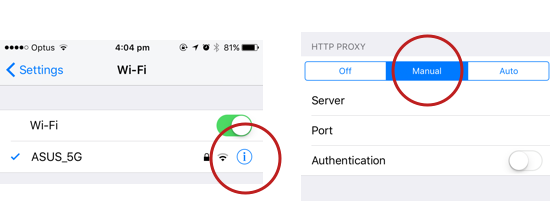
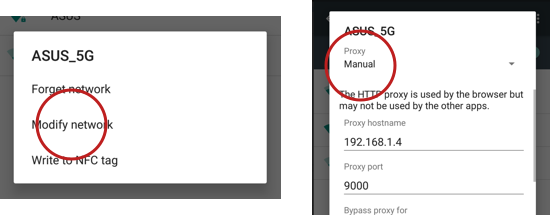

This is a tiny little proxy that will keep an eye out for any .m3u8 files that are being requested and will output them below.
It's particularly handy to capture streaming video links from mobile apps and play them on your computer 👍
You'll need to set up your phone to use this program as a proxy server.
Find the wifi settings page, press the info button next to the wifi network, change proxy to manual and fill in the settings above.
Long tap on your wifi network, select Modify Network, change Proxy to Manual and fill in the Hostname and Port as above.
Don't forget to change these settings back after, you'll lose wifi access on your device whenever this app is not running!